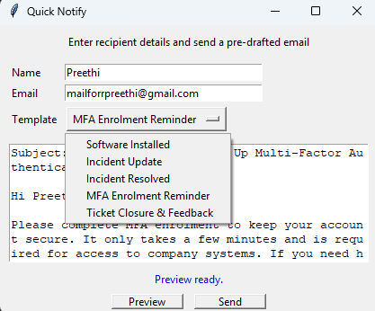

Python Projects

IT Support Notification Tool
I developed a Python-based IT support notification tool with a Tkinter GUI. It integrates with SMTP (TLS) and modular email templates to automate IT workflows such as incident updates, MFA reminders, and ticket closures. This project demonstrates skills in GUI development, secure email automation, and modular scripting.
SQLite User Database Tool
I built a desktop CRUD application in Python using Tkinter and SQLite. The tool allows adding, updating, searching, and deleting user records with a simple interface. This project showcases my skills in database management, event-driven programming, and Python GUI design.